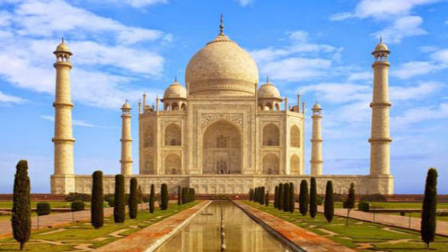
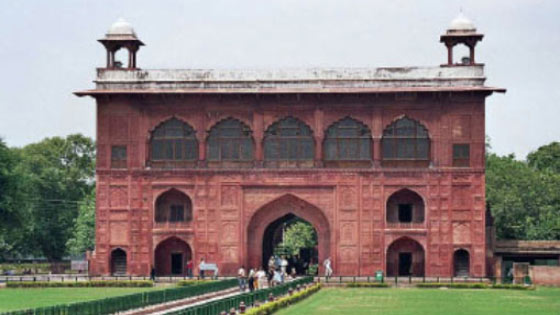
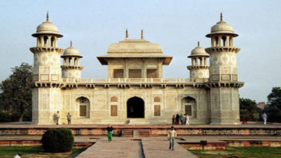
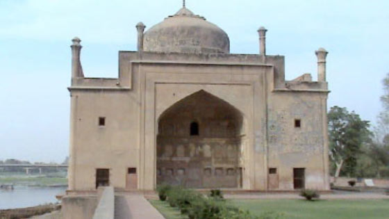

¿Qué hacer en India?
A continuación te mostramos los 6 puntos turísticos más importantes y visitados de Agra, Uttar Pradesh en India
Taj Mahal

Uno de los mausoleos más famosos del mundo.Declarada una de las 7 maravillas por la UNESCO.
Considerado un símbolo del amor y ha inspirado a numerosos poetas, viajeros y a diversas personalidades a lo largo del tiempo.
En todo el Taj Mahal, el número 4 está representado en todas partes, es un número común en el Coral. Es visitada por millones de turistas durante todo el año. Actualmente, con excursiones durante el día para ver el atardecer y de noche cuando hay luna llena.
Fuerte Rojo

Construído por Akbar como palacio que su hijo convirtió en recinto militar.
Los grandes emperadores del Imperio mogol -Babur, Humayun, Akbar, Jahangir, Shah Jahan y Aurangzeb- vivieron y gobernaron desde aquí. Contuvo el tesoro estatal.
El Fuerte Rojo fue el palacio fortificado de Shahjahanabad, la nueva capital del quinto emperador mogol de la India, Shah Jahan (1628-1658). Su nombre se debe al color rojo de la piedra arenisca con que se construyeron sus espesas murallas.
En sus proximidades se alza otra fortaleza más antigua, Salimgarh, que fue edificada por Islam Shah Suri en 1546. Los dos edificios forman el Conjunto del Fuerte Rojo.
Fue nombrada Patrimonio de la Humanidad por la UNESCO en 1983 y es la fortaleza más grande de India (Consta de 320.000 m2)
Se finalizó en 1573. Se encuentra a 2,5 km al noroeste del Taj Mahal.
Mausoleo de Itimad-Ud-Daulah

Esta tumba ubicada en la orilla del río Yamuna fue construída por la reina Noor Jahan entre 1622 y 1628.
Se observan las incrustaciones de mármol amarillo, negro y blanco, por lo que se llamó Baby Taj.
Ubicado junto al río Yamuna, la tumba de Itmad-Ud-Daulah alberga los restos de Mirza Ghiyas y Asmat Begum, padres de Nurjahan, la reina de Jahangir, famosa por su inteligencia y belleza. Se encuentra emplazado en el centro mismo de un jardín persa inmenso, una verdadera joya arquitectónica del siglo XVII.
El edificio fue construido entre los años 1622 y 1628, y su magnífico jardín es considerado el antecesor del que más tarde fue diseñado en torno del Taj Mahal (aunque generalmente se lo conoce como el “Taj Mahal bebé”). En verdad, se trató de la primera estructura Mughal en ser edificada completamente con mármol, y también la primera vez que se utilizo Pietra Dura, un tipo de trabajo sobre el mármol que luego identificó al Taj Mahal.
Como consecuencia de los materiales utilizados, el aspecto puro e inmaculado de los blancos muros de la tumba de Itmad-Ud-Daulah es una característica identitaria del edificio. Sus entradas están constituídas por arcos, y numerosas torres (o minaretes) de planta octogonal forman parte del conjunto.
El estilo islámico está presente en los trabajos de grabado con imágenes florales que abundan en el mármol con que se constituyeron el exterior y los interiores del mausoleo. La influencia local se evidencia en los domos que coronan las cuatro torres. La cámara principal exhibe decoraciones con mosaicos y piedras semipreciosas incrustadas en el mármol blanco.
Tumba de Chini Ka Rauza

Monumento funerario de Agra donde se encuentra la tumba de Allama Afzal Khan Mullah, un instruído poeta que fue Primer Ministro del Emperador mogol Shah Jahan.
Construída en 1635 y situada a sólo un kilómetro al norte de la Tumba Itmad-Ud-Daulah, en la orilla oriental del río Yanuma en Agra.
La palabra Rauza (también usado Rouza o Roza) es un término perso-árabe usado en el Medio Oriente y en el subcontinente indio que significa templo o tumba.
La fachada del monumento Chini Ka Rauza tiene especial importancia, ya que es uno de los mejores ejemplos de trabajo con azulejos barnizados, algo que aparece en edificios de la era mogol y se conoce como kashi o chini. Chini Ka Rauza fue construido durante el reinado de Shah Jahan.
Chini-ka-Rauza es considerado un hito en la arquitectura indo-persa, ya que es el primer edificio de India que ha sido decorado exclusivamente con azulejos vidriados. La característica más distintiva de la tumba es el colorido en los azulejos o Chini, de ahí su nombre.
La tumba es de forma rectangular y está construída principalmente con piedra marrón. Las paredes de la tumba están adornadas con inscripciones y azulejos de colores dando una imagen distintiva a la estructura.La característica más significativa de la tumba es la cúpula redondeada de estilo afgano decorada con inscripciones de textos islámicos.
Jardines de Ram Bagh

Se trata de un jardín persa donde los caminos y canales dividen el jardín para representar el ideal islámico del paraíso, un jardín abundante a través del cual fluyen los ríos. En el jardín hay dos pabellones que miran hacia el río Jumma que se usaban durante los veranos calurosos para proporcionar frescor a sus visitantes. El nombre de Ram Bagh proviene del persa Aaram Bagh que significa “Jardín de Descanso”.
Los jardines mogoles son un grupo de jardines construidos por los mogoles en un estilo arquitectónico persa.
Se trata de un estilo donde los jardines cuadriculados se dividían con caminos o con canales de agua, conociéndose este estilo de hacer jardines como Charbagh o Chahar Bagh. Siempre se añadían estanques, fuentes y numerosos canales dentro de los jardines. El fundador del imperio mogol, Babur, describió su tipo de jardín favorito como Charbagh y esta palabra adquirió un nuevo significado en la India ya que aquí había escasez de ríos de corriente rápida.
Se cree que el jardín de Agra Ram Bagh fue el primero de todos los Charbagh. Tanto India como Bangladesh y Pakistán tienen jardines mogoles que difieren de sus predecesores de Asia Central con respecto a su alta disciplina geométrica.
Hay que decir que el complejo de este jardín no está dentro de los esquemas formales de un Char Bagh. Se ha mantenido en los jardines tres niveles, uno para las flores y vegetales, un segundo nivel para otras flores con finas terrazas pavimentadas y un tercer nivel con estructuras, terrazas y tanques.
Los jardines están rodeados por un muro con torres en cada esquina.El jardín está dividido en cuatro partes por unas vías pavimentadas de piedra. Al norte del jardín hay una hilera de edificios en ruinas con una puerta de entrada y construidos piedra roja.
Iglesia de Akbar

Iglesia católica construída en el siglo XVI por los jesuitas.A partir de 1580, los sacerdotes Acquaviva, Montserrat y Henríquez llegaron a Agra invitados por el emperador Akbar con el propósito de aprender sobre la cristiandad.
En 1635, se demolió por orden del emperador Shah Jahan; sin embargo, volvió a ser reconstruida al año siguiente. En 1758, fue saqueada por un grupo de invasores persas y en 1769 volvió a ser reconstruída por el Padre Wendel S. J., junto con Walter Reinhardt. En 1835 se extendió el ala este.